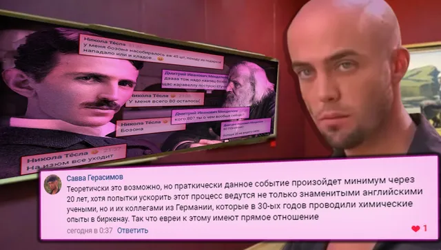
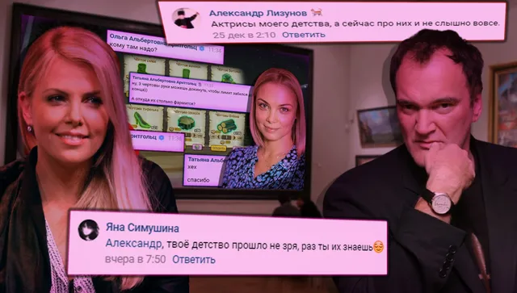
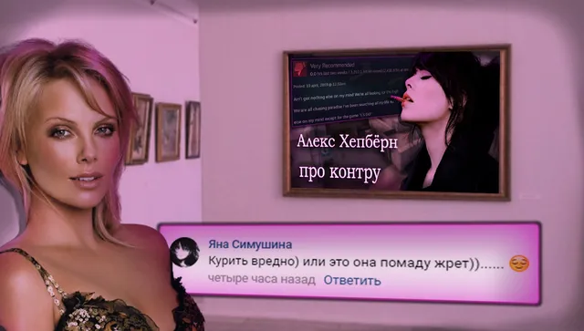
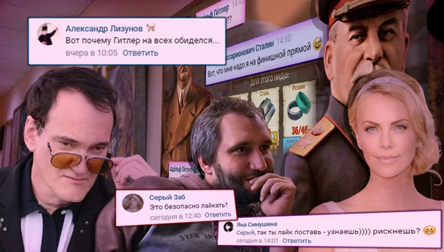

Ваши комментарии
ВКонтакте
🏙Сегодня воскресенье, к концу подходит не только неделя, но и год, встречайте по…
27 декабря 2020 · оригинал во ВКонтакте ↗





🏙Сегодня воскресенье, к концу подходит не только неделя, но и год, встречайте последний выпуск данной рубрики в текущей декаде!
🗽Титул [https://vk.com/@criticssteam-sistema-titulov|Комментатора] получают:
🌟 [id12840761|Александр Лизунов]
💛 [id599198250|Яна Симушина]
🌟 [id119602395|Вова Адамов]
⭐ [id586169986|Серый Заб]
⭐ [id467488979|Савва Герасимов]
==========================
>Всем спасибо, пишите больше.
#ВашиКомментарии@criticssteam - №24
Предыдущий выпуск - [https://vk.com/wall-196461758?q=%23%D0%92%D0%B0%D1%88%D0%B8%D0%9A%D0%BE%D0%BC%D0%BC%D0%B5%D0%BD%D1%82%D0%B0%D1%80%D0%B8%D0%B8&w=wall-196461758_2912|тут]
🗽Титул [https://vk.com/@criticssteam-sistema-titulov|Комментатора] получают:
🌟 [id12840761|Александр Лизунов]
💛 [id599198250|Яна Симушина]
🌟 [id119602395|Вова Адамов]
⭐ [id586169986|Серый Заб]
⭐ [id467488979|Савва Герасимов]
==========================
>Всем спасибо, пишите больше.
#ВашиКомментарии@criticssteam - №24
Предыдущий выпуск - [https://vk.com/wall-196461758?q=%23%D0%92%D0%B0%D1%88%D0%B8%D0%9A%D0%BE%D0%BC%D0%BC%D0%B5%D0%BD%D1%82%D0%B0%D1%80%D0%B8%D0%B8&w=wall-196461758_2912|тут]